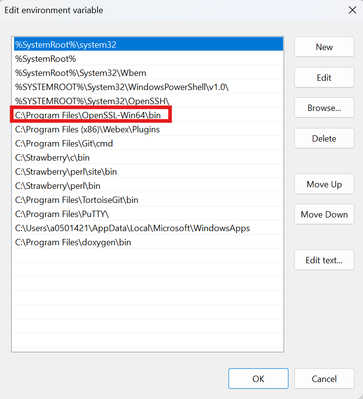
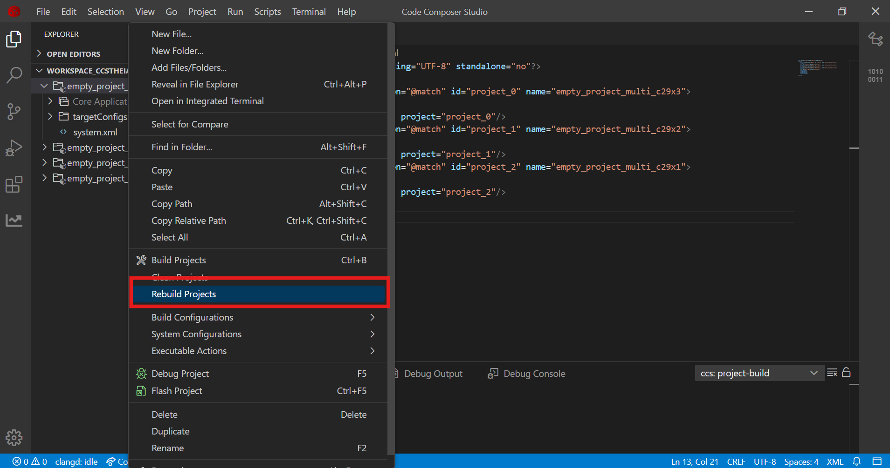

After installation completion add the openSSL path into the PATH environment variable
Navigate to 'System Properties -> Environment Variables -> System Variables -> Path
Add new entry for 'C:\Program Files\OpenSSL-Win64\bin' and move it up to make it the first entry using 'Move up' button

openSSL Path
Open Windows command prompt and verify below command
openSSL Version
On MAC installation if build failure due to openSSL certificate generation is observed then below steps should be followed:
Below mentioned lines should be added to '/etc/ssl/openssl.cnf' file
openSSL config
The example program is loaded and run from flash memory
Launch CCS
Import the example CCS project
Goto "File -> Import Project(s)"
Browse the required example directory within SDK and select the 'ccs' folder which contain the CCS projectspec file
Discovered projects are listed
Select a project and click 'Finish'
Import CCS project
Select FLASH build configuration
Default build configuration is RAM, change it to FLASH
Right click on the project select 'Build Configurations -> FLASH'
FLASH Build Configuration
Build and Load Program
Following are the options to build and load an example program
Build and Load together in a single click
Righ click on the project and select 'Debug Project (F5)' option
Debug CCS project
It performs the following sequence
Builds the project
Executes the 'Post build sequence for FLASH configuration'
Launches the Target Configuration based on the 'TMS320F29H850TU9.ccxml' included in projectspec
Prompts user to select the core to load the program
Select core to load program
Connects to the target core selected in above step
Loads the program onto the selected core
Build and Load separately
Build
Right click on the project and select either 'Build Project(s)' or 'Rebuild Project(s)' option
Build CCS project
Upon successful build, example program is generated 'C:\Users\user_id\workspace_ccstheia\timer_ex2_cputimers_syscfg\RAM\' folder
Executes the 'Post build sequence for FLASH configuration'
Connect Target
Copy the target configuration ccxml (C:\ti\mcu_sdk_f29h85x_1_00_00_00_EA2\examples\device_support\targetconfigs\TMS320F29H850TU9.ccxml) file to 'C:\Users\user_id\ti\CCSTargetConfigurations' folder
Goto 'Debug->TARGET CONFIGURATION' and refresh, after which the copied ccxml file is discovered
CCS Target Configuration
Launch the taget configuration
Right click on the ccxml file and select 'Start Project-less Debug' option
CCS Target Launch
Connect the desired core
Right click on the core and select 'Connect Target' option
CCS Core Connect
Load
Load the program either built in previous 'Build' step or any other pre-built one
Right click on the connected target and select 'Load -> Load Program' option
Browse for the executable .out file and select it
CCS Load Program
Post build sequence for FLASH configuration
When an example project is built, an ELF file gets created (example.out)
The ELF file is converted into binary format (example.bin) by excluding the following sections
cert
The binary file is signed with X509 certificate, which creates 'C29-cert-pad.bin' file
The ELF file 'cert' section is updated with the 'C29-cert-pad.bin' file
Run and Debug Program
Run
Once the program is loaded the core is in 'HALTED' state and the following debug options are available
Continue (Free Run)
Runs either to end of the program or to a breakpoint if present
Step Over
Step Into
Step Out
Restart
Starts from 'main' function
Stop
Disconnects the target
CCS Run
Debug
The following options are available to debug the loaded program
Breakpoints
The program execution halts at a breakpoint
View memory contents
Goto 'View->Memory'
Select address and format
CCS Memory
View Global Variables
Add global variables to 'Watch' window to view the contents
CCS Memory
View Core and Peripheral registers
Goto 'View->Register' to view the core and peripheral regsters
CCS Registers
Debug Scripts
Available under Script dropdown.
Can be used to check or clear ESM, Error Aggregator, Interrupt status etc.
Checking the ESM status
Checking the Error Agg status
Checking the Interrupt status
Build and Load Multicore examples
Build
Launch CCS
Import multi core example similar to single core example
Select the Build Configuration similar to single core example
Build the multi core project:
Right click on the main project and select 'Build Project(s)'

Multicore Example Build
It builds the projects for multiple CPUs
Load
ELF for each core is generated
CPU1 ELF file embeds the ELF of CPU2/CPU3
CPU1 ELF alone is required to be loaded
Only the symbols for CPU2/CPU3 shall be loaded for debug purpose
Build and Load SSU examples
Build
The SSU single core and multi core examples support the following FLASH build configuration
FLASH_HSFS
For HSFS device type
FLASH_HSSE
For HSSE device type
Load
HSFS
The example program contains the SSU settings for CPU1/CPU2 and CPU3 as SECCFG sections in the ELF file.
When program is loaded, the CPU1/CPU2 and CPU3 SECCFG sections are programmed into SECCFG sectors, refer to memory map for details on the address range.
HSSE
The example program doesnot program the CPU1/CPU2 and CPU3 SECCFG sections, instead a binary file containing the certificate for CPU1 SECCFG, and CPU1, CPU2 and CPU3 SECCFG is created. This file shall be used by HSM to program the SECCFG along with the certificate.
A binary image containing the certificate and the example binary is created which is flashed using the UART flash programmer.
For the first time programming the example, UART flash programmer should be used which opens up the C29 debug port post which for the successive programing can be done using CCS.
After loading the example, Power Off and On the EVM so that the new SSU settings get loaded by bootrom and example runs as expected
Note
There is a pre built CPU1 ELF file (default_seccfg_bankmode_0_ssumode1.out) is provided along with the SDK at 'mcu_sdk_f29h85xsource_code\c29_sdk\mcu_sdk_f29h85x\source' folder which should be used to reset the contents of CPU1/CPU2 and CPU3 SECCFG sectors. Caution should be exercised to load this only on HSFS device types.
 1.9.1
1.9.1